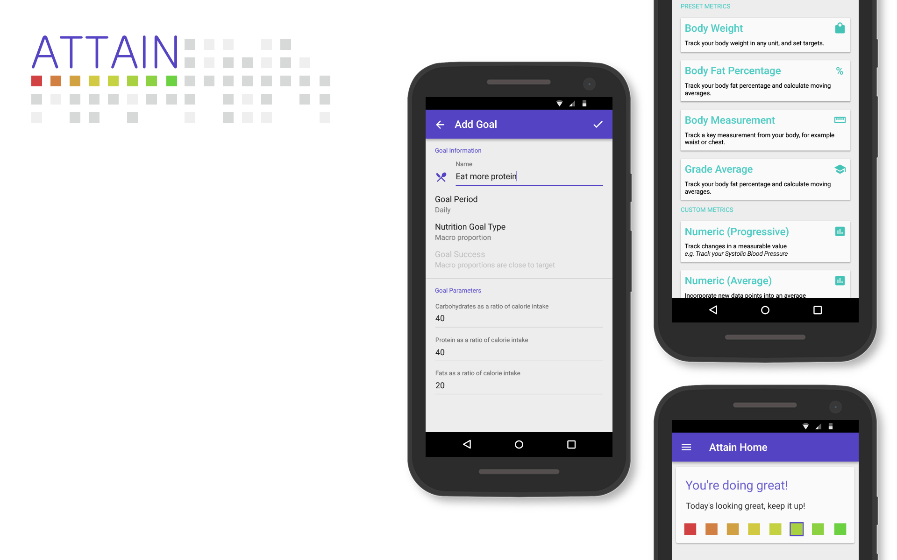

The Solution?
Create a framework where users can create, monitor, and ATTAIN their own goals.
github.com/elliottbrooks
Presented by Elliott Brooks
Create a framework where users can create, monitor, and ATTAIN their own goals.
The user chooses a metric and a goal. Not every goal needs to be tied to a metric, and some metrics can be lagging indicators.
To combat the information overload associated with tracking multiple behaviours, we present users with a simple and intuitive measure of their current progress - to the minute.
For any questions, please contact hi@ell.io.tt